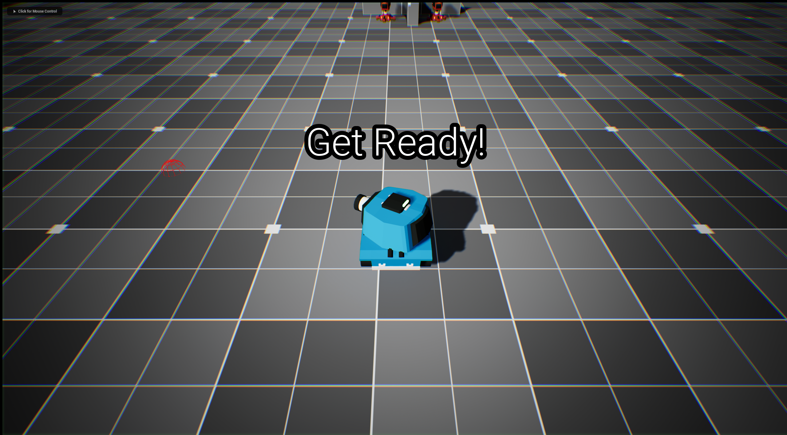
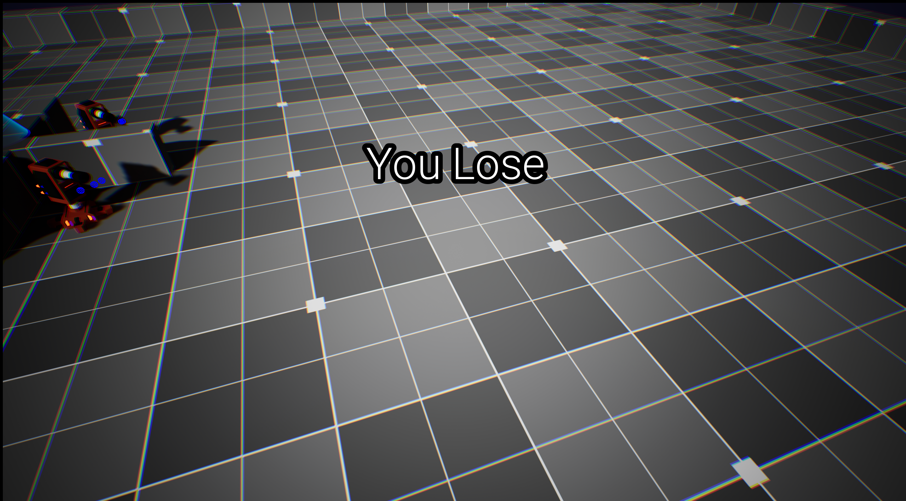

Project 3
Toon Tanks
A 2D top-down tank game made in Unreal Engine with C++ featuring a cartoonish art style and challenging Enemy AI.

The Concept
A top-down tank shooter built in Unreal Engine using C++. Straightforward premise, but it gave me focused practice on core Unreal systems.
What I Built & Learned
- Pawn/Character system - I implemented a tank-controlled pawn from scratch, learning how Unreal handles possession, input binding, and movement at the C++ level.
- Enemy AI - Basic enemy behavior that tracks and engages the player. A first step into AI controllers and behavior logic.
- Input handling in C++ - Setting up character movement controls entirely in C++ rather than Blueprints. This has become a foundational skill I've carried into other projects. Understanding how input flows through player controllers and pawns is something I reach for constantly.
Why This Matters
This was a smaller project, but it locked in some essential Unreal C++ patterns. Moving a character with code, not just Blueprint nodes, gave me a much deeper understanding of how the engine actually works under the hood.
Project Media


